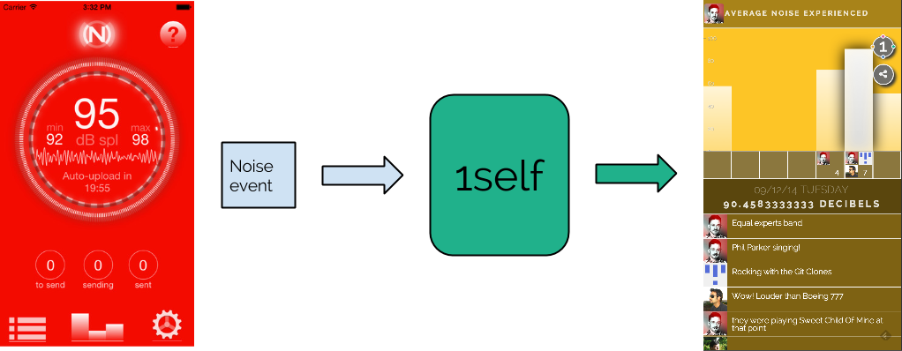

1self allows users to collect, compare, correlate and comment on all of their data. 1self’s flexible, adaptable platform let’s users collect all the measurements they care about in 2 ways:
- Using 1self, users manually collect any measurement they can imagine
- By providing an API for developers to automatically send user’s measurement data
This guide is for developers, rather than users. Use cases for the API can be found here. Two types of developers will find this guide useful: Application developers and integration developers. Application developers engage users through API provided visualizations. Integration developers connect existing data, such as Twitter or Facebook, to the 1self Platform.
The API is a vertically integrated storage, analytics and visualization application stack for human measurement. Events, representing human measurements, are fed into 1self. The developer calls an API which provides event visualizations and insights to the user. Developers describe event metadata and values, 1self does everything else.

- Applications are web or native programs that provide value to users. Applications integrate with 1self to record interactions and show the data back to their users. Applications are a type of integration.
- Collectors are headless web apps that collect a user’s data from existing APIs and send it to 1self. Collectors can be transient, meaning they collect the currently available information. Or, they can be historical, meaning they collect historical data and send it to 1self. Collectors are a type of integration.
- Integrations are any type of software that make use of the 1self platform.
- Devices are objects that contain one or more sensors that can record personally relevant information about an individual. Devices can send data direct to 1self if they have that capability or via a companion application.
- Events capture data about the self. Events may be about physiology, environment or activity. Events represent something about the self that happened at a particular point in time.
- Streams are a logical collection of events on the 1self API. They provide a place to read and write events for applications and integrations. They control event access and coordinate integration synchronisation.
- Visualizations aggregate and display events to show users useful views of themselves. Currently, there is one visualization, the barchart. More will be added soon.
- The Event API is the set of rest endpoints that allow the reading and writing of events.
- The Visualization API is the set of rest endpoints that allow applications to display a visualization based on a set of parameters.
1self is designed to significantly reduce the cost of understanding personal data. Here’s how.
Often, personal data resides in places that don’t provide good tools for understanding it. Building an
application that brings better understanding to that data involves reading it, transforming it, storing it,
syncing it and visualizing it. This is difficult and time-consuming - requiring expertise in all areas.
1self does most of that for you. You simply read the source data, convert it into 1self events and use our
syncing hooks. Once the data is in 1self, visualizations come out of the box. As we build new visualizations,
they automatically appear for the data you synchronize.
For example, Facebook doesn’t give you any messaging stats. Creating a 1self silo connector would allow the
visualization of messages sent and received over time.
Many apis don’t provide rich historical access. To build a historical view, you would need to: read the api data,
store it, and visualize it. Then you re-trigger data collection.
1self takes care of everything reading the data. You write code to read source data and hook into our
snapshotting hooks. 1self stores the data and shows it back to users so that they can understand trends over
time.
For example, the twitter api will tell you the number of followers you have, but doesn’t let you get that
information for points in the past. Build a 1self integration to grab that data and 1self will store the data
and co-ordinate the snapshotting.
Whenever a user interacts with an application - be it web or native - data about them is being generated. This
data is interesting to users, it creates a more engaging in-app experience - but application developers have
precious little time to surface it. They must focus on the main features.
1self is a scalable, robust backend that makes it trivial create an engaging user data experience. Simply
describe user events and send them to our api. We store the data and provide visualizations and insights for the
user. 1self makes it easy for you to give the interaction data to your users. Your users will engage with your
app more and 1self can give users timely encouragements that remind them of your app.
1self noise is a sound meter. It
uses 1self to visualize noise, as you experience it.
Until we’re in a world of ubiquitous sensors and personal data, there are aspects of ourselves that can only be
measured manually. Building applications to collect data about ourselves takes a huge amount of time, knowledge
and effort. Currently, building them is too hard - even for developers.
1self lets you build manual collection quickly with cross-platform collection simple, reliable storage and
beuatiful visualizations. Simply build an app that feeds measurements into 1self, then 1self takes care of
everything else.
Here at 1self, we created temperature in an hour. It manually captures
measureements from an off-the-shelf digital thermometer.
The world around us is becoming instrumented with sensors. As a manufacturer or hacker of sensors, building a
backend to capture, store and visualize that data is expensive and time consuming.
1self let’s you concentrate on building better, more reliable sensors. Rather than building your own, use our
platform to capture and visualize the sensor data. Sensors can be pre-loaded with the configuration required to
write to our api. From that point on, users of the sensors can make sense of their data with insights and
visualizations provided by the platform.